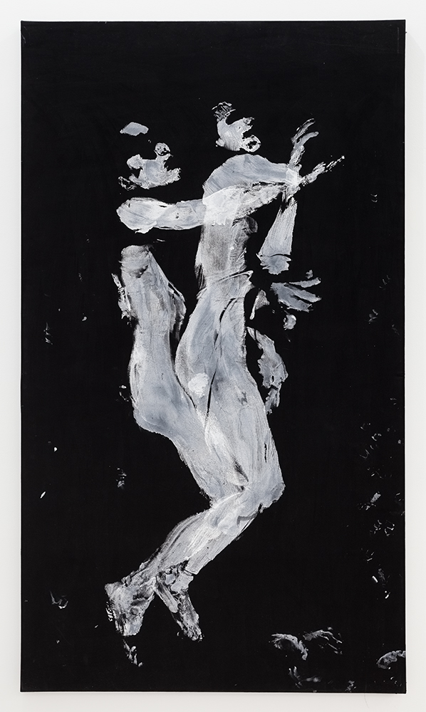
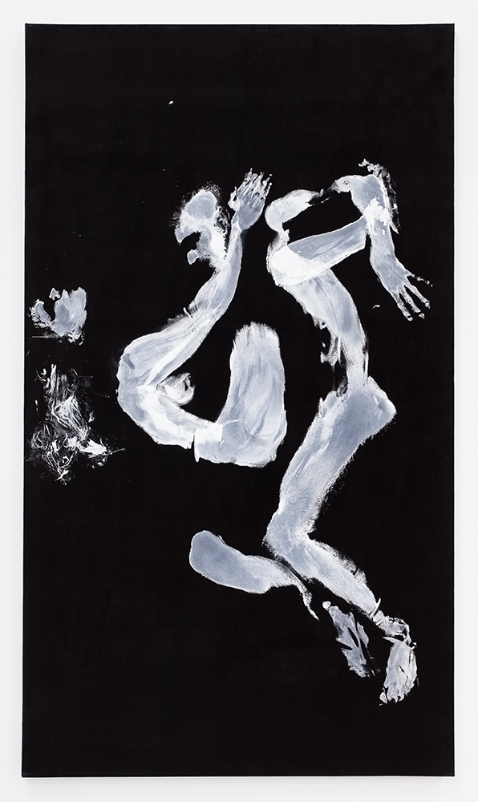
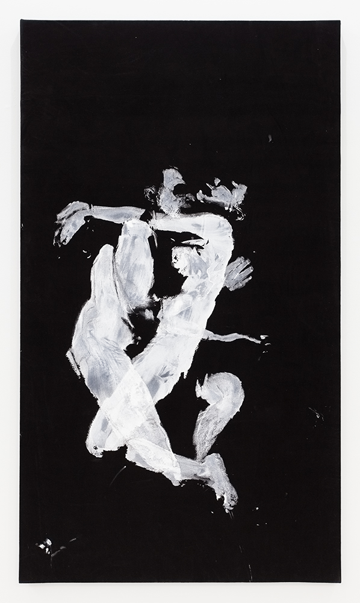
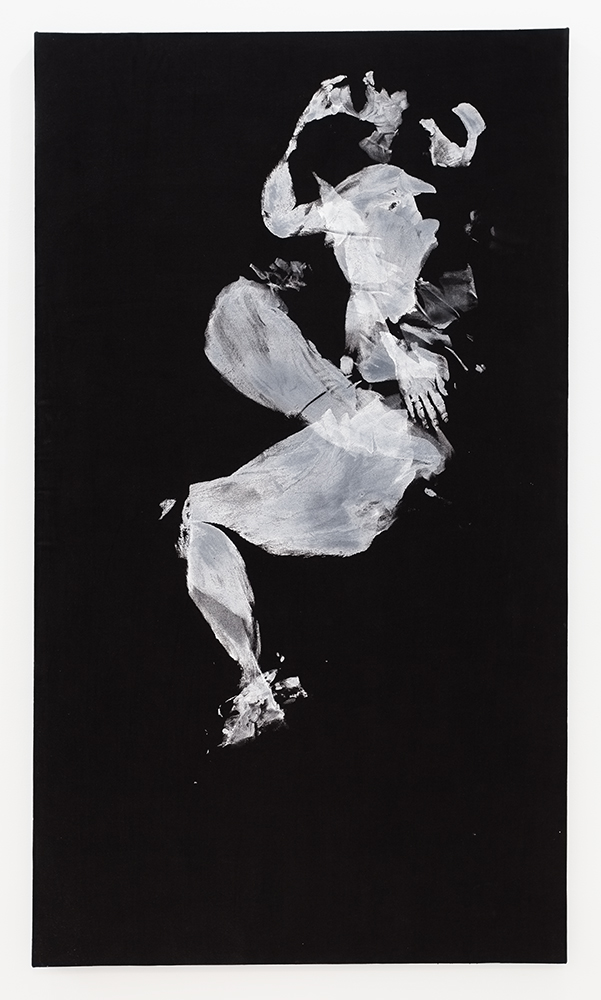
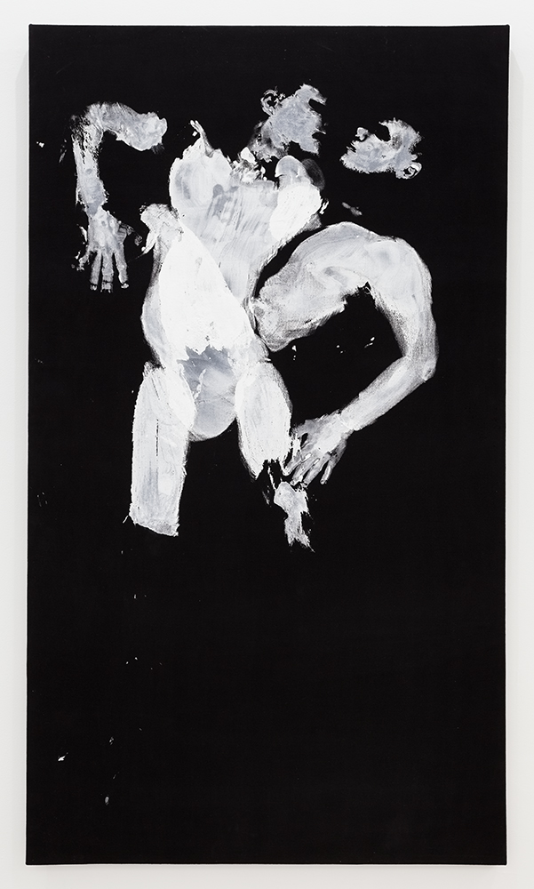
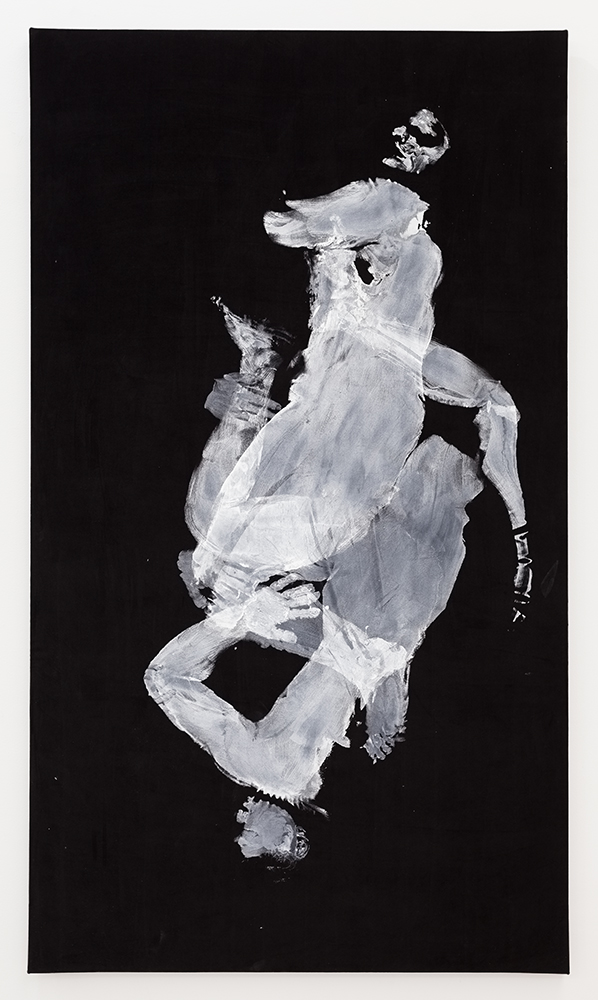
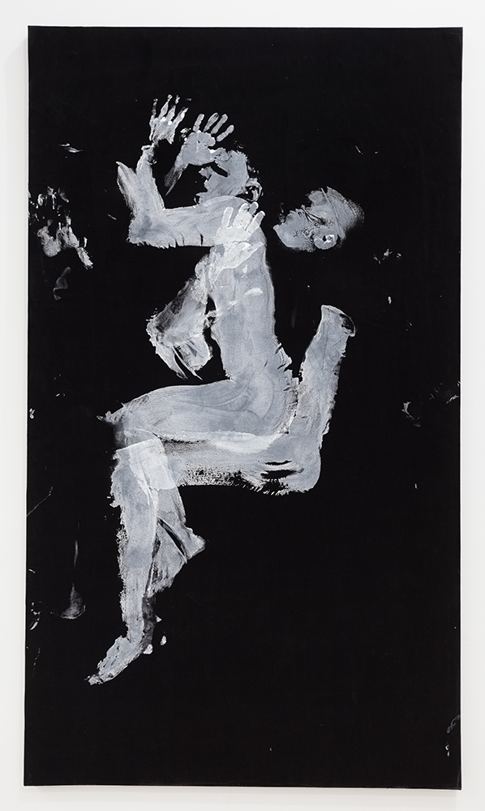
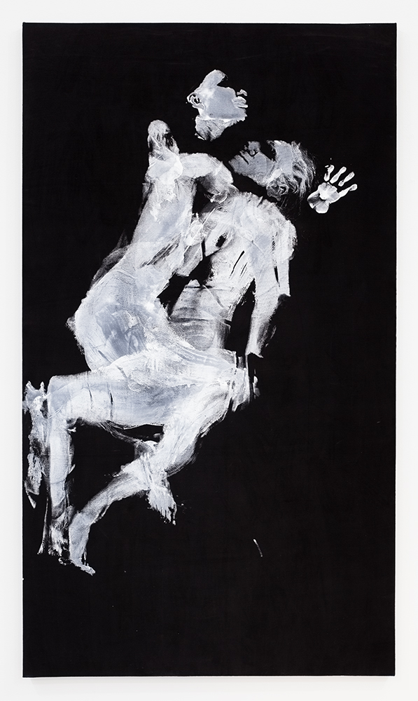
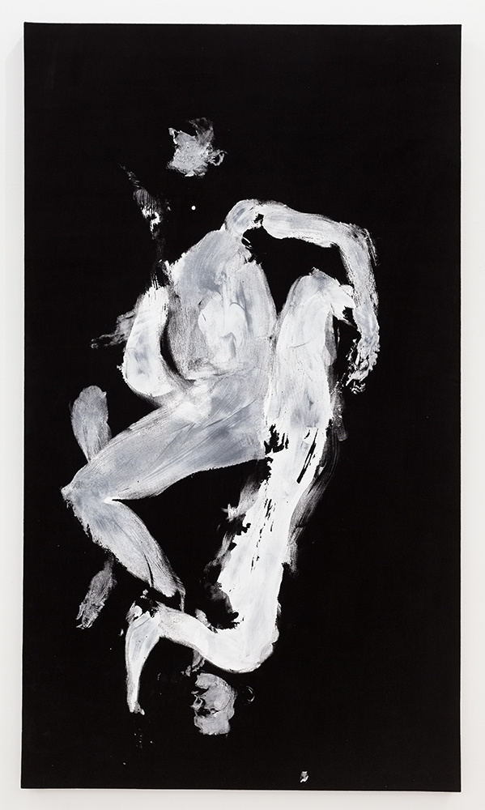

The title of this series refers to a 1972 black light poster that I bought on 42nd Street when it was
still filled with porn shops. The poster, titled The Afronomical Ways, equates sex positions with
astrological signs. On a black velvet, flocked background, it depicts ecstatic day-glo couples
- silhouettes with Afros - cavorting among the stars. Over twenty years ago, I made paintings
based on these positions by covering my body with paint and pressing it onto black velvet.
Today, in a reprise of the series, I invite couples to make the imprints, usually in my studio. The
paintings are still on black velvet. Included here is a video recording of a painting/performance
Leo that took place at the opening of my exhibition The Golden Age at Sassa Trülzch's gallery in
June 2011.
The series also includes a video animation "The Afronomical Ways". The soundtrack features
music by my band, Dirty Mirrors.
- 
Aquarius, 2012, 84" x 48", acrylic paint on black velvet
Virgo, 2012, 84" x 48", acrylic paint on black velvet- 
Taurus, 2012, 84" x 48", acrylic paint on black velvet
- 
Scorpio, 2012, 84" x 48", acrylic paint on black velvet
- 
Sagittarius, 2012, 84" x 48", acrylic paint on black velvet
- 
Pisces, 2012, 84" x 48", acrylic paint on black velvet

Libra, 2012, 84" x 48", acrylic paint on black velvet
Leo, 2012, 84" x 48", acrylic paint on black velvet- 
Gemini, 2012, 84" x 48", acrylic paint on black velvet
- 
Capricorn, 2012, 84" x 48", acrylic paint on black velvet
- 
Cancer, 2012, 84" x 48", acrylic paint on black velvet
- 
Aries, 2012, 84" x 48", acrylic paint on black velvet
-
The Afronomical Ways
Music: Dirty Mirrors
-
Leo
This records a performance at the opening of my show, "The Golden Age" at Sassa Trülzsch's gallery in June 2011. The dancers printed themselves on black velvet in the sexual position ascribed to the zodiac sign of Leo.
Following the performance, we hung the painting on the gallery wall and it became part of my series "The Astrological Ways"